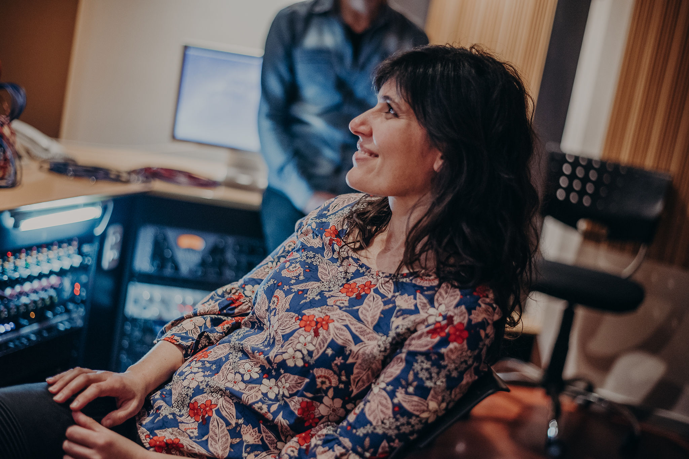
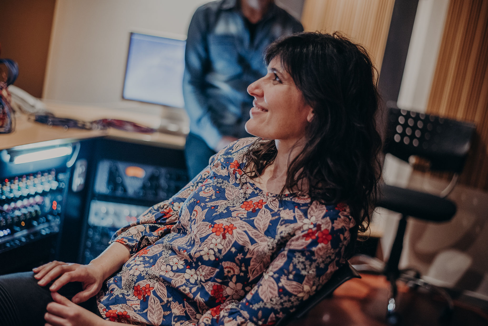
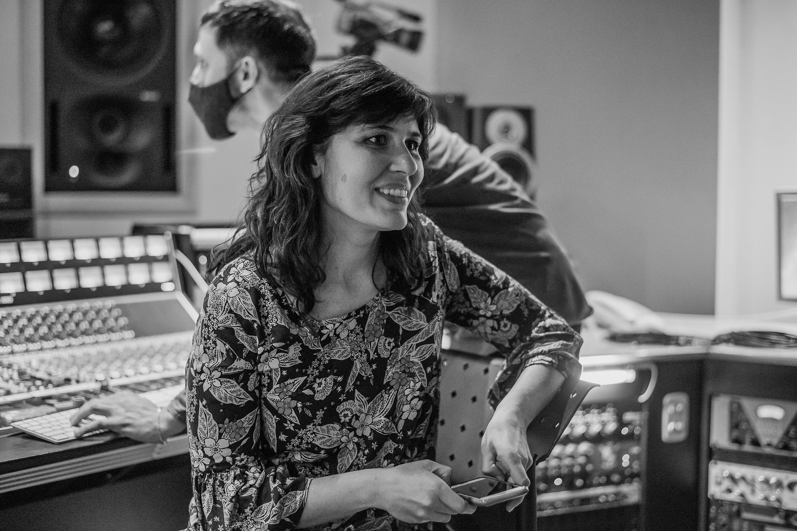
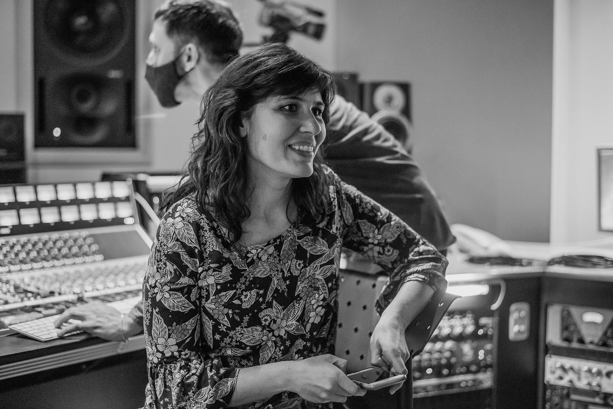
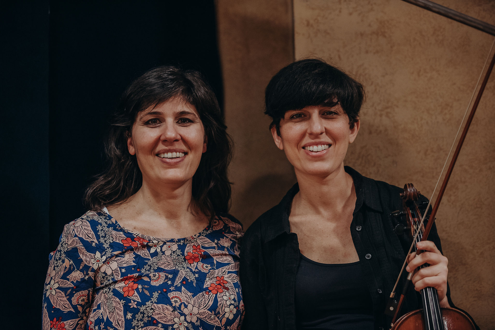
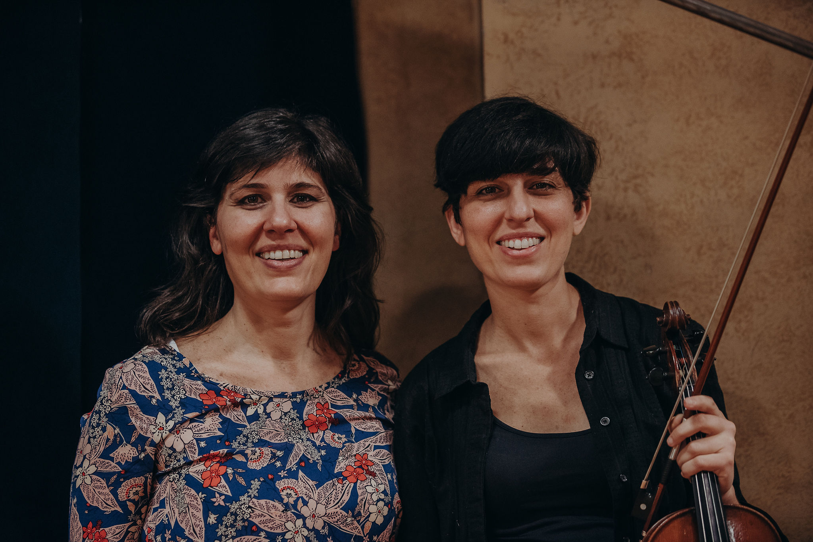

LESSONS & COURSES
FACE TO FACE &
ONLINE
Enter each section to find out all about classes
DISCOGRAPHY

HOY (2022)
Idea and vocals: Natalia BrilArrangements, piano and direction: Noelia Sinkunas
HOY is the first album that covers songs written by Tango female contemporary composers and lyricists, created and orchestrated to be danced from the first to the last song. The original idea was Natalia Bril´s, while the arrangements, piano interpretation and the direction were performed by the pianist and composer Noelia Sinkunas. This album includes tangos, waltzes and milongas by: Natalia Lagos, Elbi Olalla, Noelia Sinkunas, Ana Sofia Stamponi, Delfina Daverio and Cintia Trigo. There is a pearl bonus track at the end of the songlist, a tango composed by Maruja Pacheco Huergo and lyrics by Homero Manzi in the very beginning of the nineteen hundreds named “Canto de ausencia”. The popular journalist Víctor Hugo Morales referred to this album in his radio programme by saying on air: “It is so impressive this album by Natalia Bril”.

OTRA MIRADA (2018)
Voice: Natalia BrilGuitar and arregments: Leonardo Andersen
In her very first album Otra Mirada, Natalia Bril and Leonardo Andersen, sift out a selection of unmissable classics, to revert them into the intimacy that only a voice and guitar duet can reach. The journalist Carlos Salatino from the popular newspaper Tiempo Argentino said: “The musical chemistry that occurs between the two of them, achieves a work in which the genre finds a new and refreshing look”.
PARTICIPATIONS

ESCUADRON DE GLITTER (2022)
Music: Noelia SinkunasLyrics: Claudia Levy y Natalia Bril
This song is part of the album named “Vení que te cuento” an idea and achievement by Tango de Hoy productions. The album brings together songs created specially with the aim of having an imaginary conversation with Tita Merello and Ada Falcón -two tango singers born in 1904 and 1905 each-, and telling them about all the goals that were achieved in the society, specially by feminism. Each song was composed by one singer and her team and all the nine singers together have created a song list that includes a mix of tangos, waltzes and milongas. “Escuadrón de glitter” was recorded by Noelia Sinkunas at the piano, Milagros Caliva played bandoneon and Natalia Bril, vocals.
CUCHI CUCHI (2018)
Genre: RockChoirs on the song Cuchi Cuchi from the EP “Vivo” by Nico Pérez.
EL RITUAL (2021)
Genre: Tango.Choirs on the song El ritual from the album of the same name by Delfina Daverio
PRESS


BIO
Natalia Bril was born in Buenos Aires and has been a Tango singer
from the very beginning of her career. She fulfilled her studies at the Escuela de Música
Popular de Avellaneda, achieving and getting both degrees, as a singer and music teacher. She
also studied with teachers such as Maria Rosa Farré, Alejandro Guyot, Patricia Andrade, Fabiana
Grosso, Claudio Brocco, Mercedes García Blesa, María del Carmen Aguilar, among others.
He has performed in Buenos Aires in stages such as the Buenos Aires Tango Festival, Queer Tango Festival, Café Vinilo, Torquato Tasso, Teatro Roma de Avellaneda (along with the orchestra of that municipality), among others. Her first Europe tour was in 2019 together with “La Hoguera” small orchestra under the direction of Maestro Julian Corach, performing in countries such as France, Germany, Switzerland, Austria, Czech Republic, Denmark. One year later, she would return with guitar player Leonardo Andersen with whom they play together as a duo since 2016 to the present.
In 2022 she released her second album “HOY”, putting together tangos, waltzes and milongas written by 21st century female composers. The whole album was arranged and orchestrated in the style of the most emblematic orchestras of the golden age of tango. This original idea placed HOY as the first album of its kind and was among the selected prized projects by Mecenazgo 2021 contest.
Her first album “Otra mirada” was released in May 2018, a selection of classic tangos by Natalia Bril and Leo Andersen. The duo was one the selected by Bares Notables contest in 2018.
GALLERY


 



 



 


{kind=link}